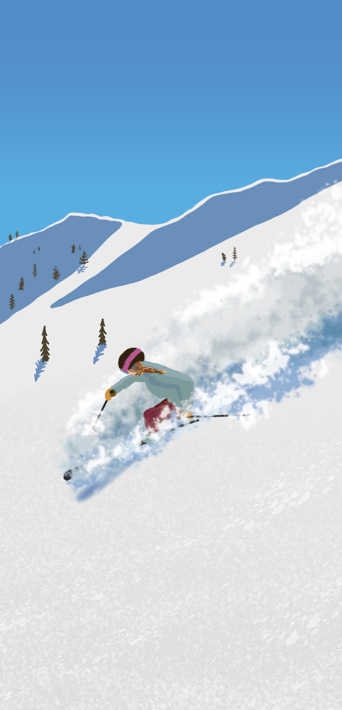
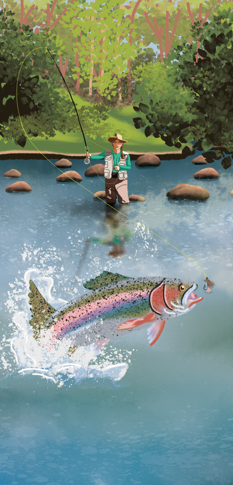
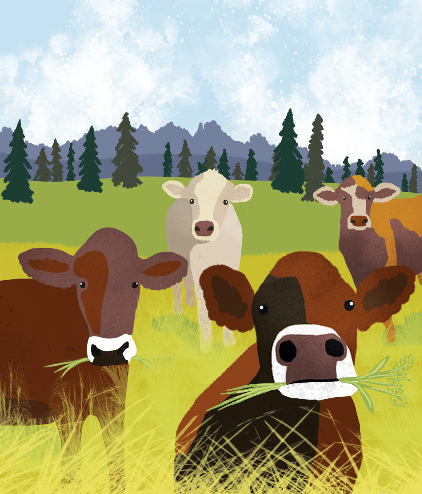
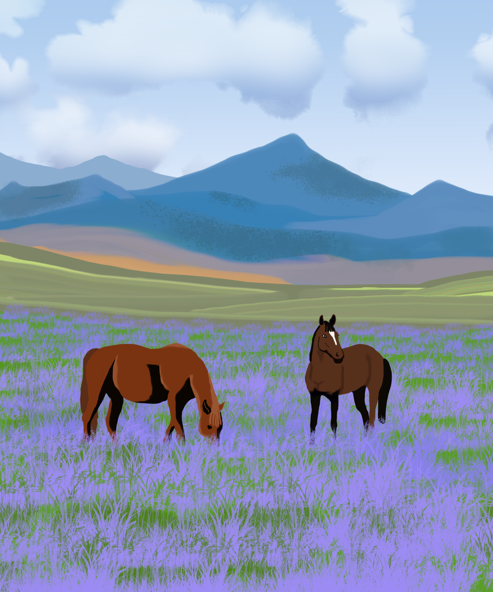
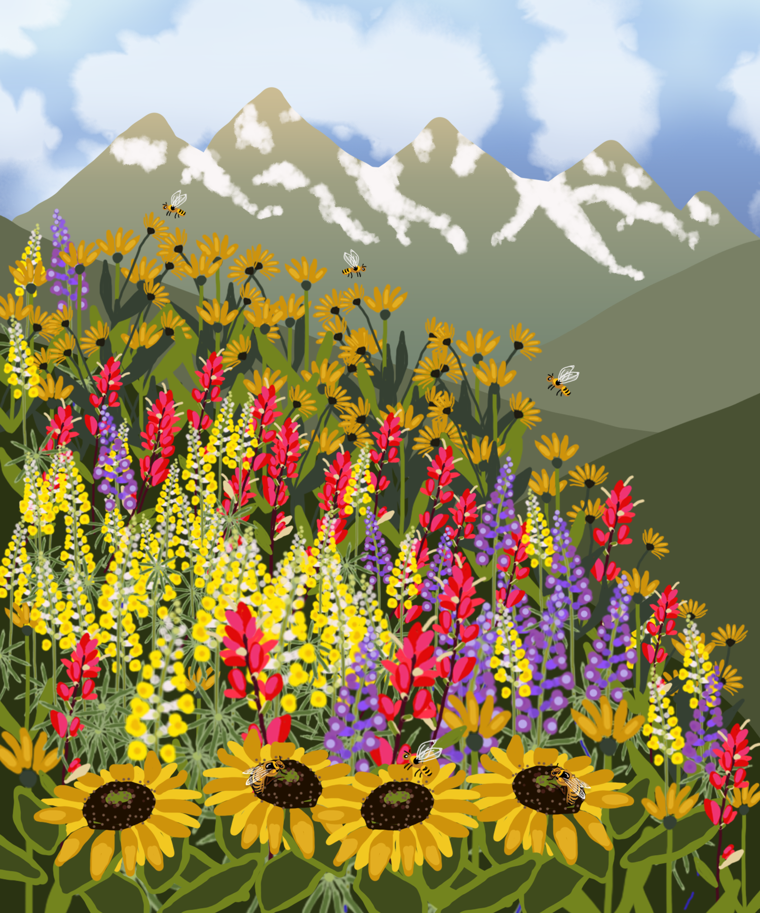
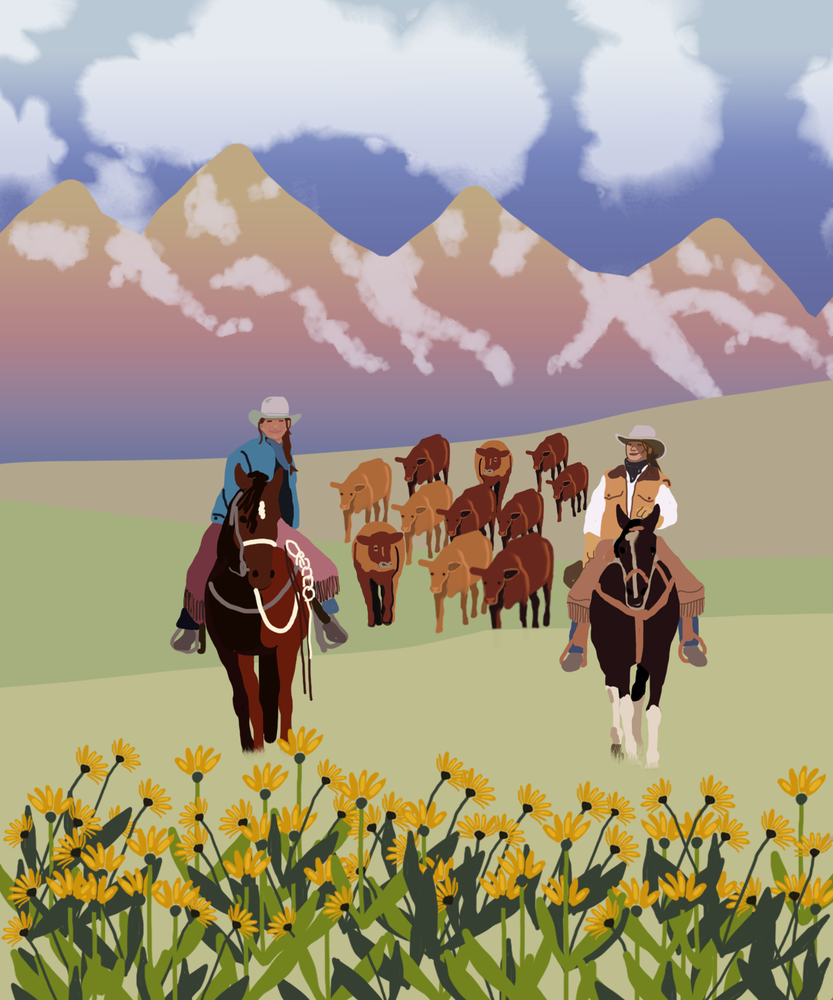

GOAL: A distinctive illustration style used across cards, packaging, and advertising to create memorable, personality-driven visuals.
PROCESS: These illustrations are part of an ongoing body of work that explores a visual style that is both expressive and recognizable. My approach blends realistic elements with whimsical exaggeration, creating imagery that feels grounded while still playful and imaginative.
OUTCOME: The illustrations have been used across a variety of applications including greeting cards, product packaging, and advertising campaigns. Each piece is designed to communicate character and narrative while remaining flexible enough to work across different formats and brand contexts.





